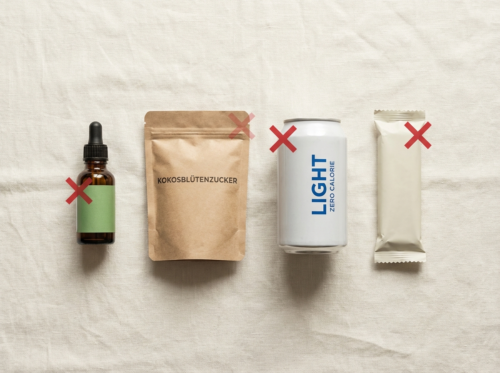
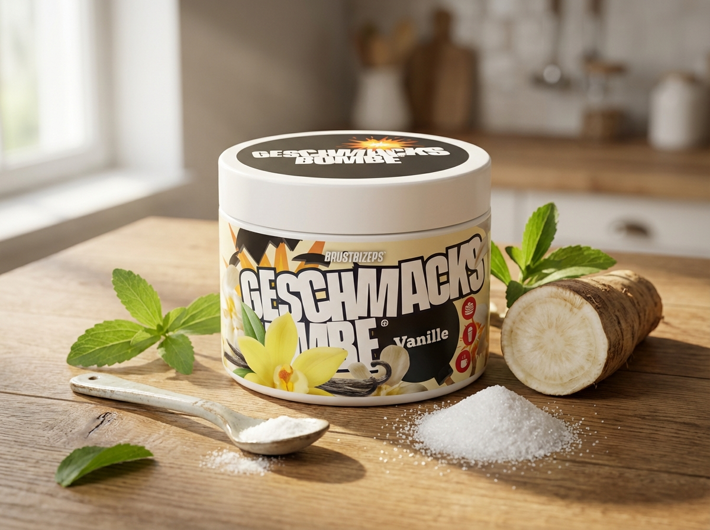
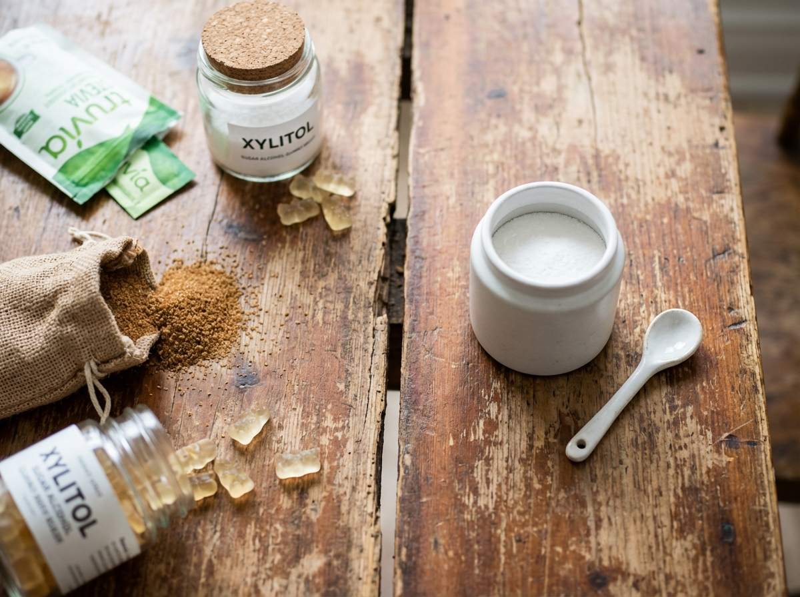

Du kennst das Gefühl.
Du startest motiviert in die Woche. Du hast deinen Meal-Plan. Du hast dein Training. Du weißt genau, was du tun musst.
Montag läuft gut. Dienstag auch. Mittwoch isst du deinen Quark ohne Süße, tust so, als wäre das normal, und redest dir ein, dass du dich daran gewöhnst.
Du gewöhnst dich nicht daran.
Donnerstagabend greifst du zur Schokolade. Nicht weil du schwach bist. Sondern weil dein Gehirn seit drei Tagen auf ein Signal wartet, das nie gekommen ist.
Ich war diese Frau. Über Jahre. Drei Diäten, zweimal abgenommen, dreimal zugenommen. Jedes Mal dieselbe Geschichte: Ich scheiterte nicht an den Kalorien. Ich scheiterte am Geschmack.
Dann stieß ich auf etwas, das ich für Marketing-Unsinn hielt – bis ich verstand, was dahinter steckt. Und bis ich verstand, warum jede Zuckeralternative, die ich je probiert hatte, letztendlich gescheitert war.
Was ich herausgefunden habe, möchte ich heute mit dir teilen. Denn wenn du schon mehrfach versucht hast, Zucker zu reduzieren, und immer wieder gescheitert bist – dann lag es wahrscheinlich nicht an dir.
Das Süß-Paradoxon: Warum Verzicht biologisch zum Scheitern verurteilt ist
Lass mich dir etwas erklären, das die Diätindustrie nicht gerne hört.
Dein Gehirn besitzt spezialisierte Süßrezeptoren – nicht nur auf der Zunge, sondern im gesamten Verdauungstrakt. Diese Rezeptoren sind evolutionär darauf ausgelegt, ein klares Signal zu senden, wenn sie ausreichend stimuliert werden: Ich bin zufrieden. Ich habe bekommen, was ich brauche.
Das Problem: Wenn du aufhörst, Zucker zu essen, ohne diese Rezeptoren anderweitig zu befriedigen, sendet dein Gehirn das gegenteilige Signal. Nicht als Bestrafung. Nicht weil du versagt hast. Sondern weil es biologisch so programmiert ist.
Es löst Heißhunger aus. Es erhöht die Cortisol-Ausschüttung. Es macht dich unruhig, unkonzentriert und – irgendwann – unausweichlich – schwach.
Und genau hier liegt das fundamentale Problem mit dem Rat „Iss einfach weniger Süßes": Er ignoriert vollständig, was in deinem Körper passiert, wenn du das versuchst. Du kämpfst nicht gegen eine schlechte Angewohnheit. Du kämpfst gegen dein eigenes Gehirn.

Das größere Problem: Warum alle bekannten Alternativen dieses Problem nicht lösen
Aber es kommt noch schlimmer. Denn natürlich bist du nicht die Erste, die das erkannt hat. Der Markt ist voll mit Lösungen.
Stevia. Aspartam. Kokosblütenzucker. Light-Produkte. Zero-Getränke. Proteinriegel mit Zuckeralkoholen.
Das Problem: Keine davon löst das eigentliche Problem wirklich.
Stevia stimuliert deine Süßrezeptoren – aber hinterlässt einen bitteren, lakritzartigen Nachgeschmack, der dein Gehirn nicht wirklich befriedigt. Es ist wie ein Versprechen, das nicht eingehalten wird. Dein Körper spürt die Diskrepanz.
Kokosblütenzucker und Agavendicksaft klingen gesund, sind aber kalorientechnisch kaum besser als normaler Haushaltszucker. Du zahlst mehr, fühlst dich gesünder – und sabotierst trotzdem deine Kalorienbilanz.
Zuckeralkohole wie Maltit funktionieren auf dem Papier, aber jeder, der schon einmal eine ganze Packung zuckerfreier Gummibärchen gegessen hat, kennt die Konsequenzen – und die sind nicht angenehm.
Light-Produkte aus dem Supermarkt? Sie nehmen dir jede Kontrolle darüber, was in deinem Essen steckt. Wer bewusst isst, wer selbst kocht, wer seinen Quark morgens selbst abwiegt – der ist mit Fertiglösungen schlecht bedient.
Und irgendwann – manchmal nach Wochen, manchmal nach Tagen – gewinnt der Schokoriegel.
Die Lösung, die ich zufällig entdeckte – und erst nicht ernst nahm
Ich muss ehrlich sein: Als mir eine Freundin zum ersten Mal davon erzählte, hörte ich höflich zu – und dachte innerlich: Wieder so ein Produkt.
Ich hatte in den letzten Jahren wirklich alles probiert. Stevia. Erythrit. Mönchsfrucht. Kokosblütenzucker. Proteinriegel mit Zuckeralkoholen. Ich war nicht naiv. Ich wusste, wie Marketing funktioniert. Und ich wusste, wie sich ein bitterer Stevia-Nachgeschmack im Morgenkaffee anfühlt.
Aber dann erklärte sie mir nicht das Produkt. Sie erklärte mir das Prinzip. Und das war das erste Mal, dass mir jemand eine Antwort gab, die wirklich Sinn ergab.
Nicht „dieser Süßstoff hat weniger Kalorien als Zucker."
Sondern: Warum dein Gehirn beim Zuckerverzicht überhaupt in den Entzug geht – und was nötig ist, um das zu verhindern.
Was in deinem Gehirn wirklich passiert – und warum das der entscheidende Unterschied ist
Hier ist etwas, das die Diätindustrie nicht kommuniziert, weil es ihr Geschäftsmodell untergräbt:
Dein Gehirn bewertet Süße nicht nur nach Kalorien. Es bewertet sie nach der Intensität der Rezeptor-Stimulation.
Wenn du Zucker isst, binden Glukosemoleküle an spezifische Süßrezeptoren – auf der Zunge, aber auch im gesamten Verdauungstrakt. Diese Bindung sendet ein klares Signal an dein Gehirn: Bedürfnis erfüllt. Zufrieden. Beruhigt.
Wenn du aufhörst, Zucker zu essen, ohne diese Rezeptoren anderweitig vollständig zu stimulieren, bleibt dieses Signal aus. Dein Gehirn registriert nicht „ich esse gesünder". Es registriert: unerfülltes Bedürfnis. Und es reagiert darauf so, wie es auf jedes unerfüllte Bedürfnis reagiert – mit wachsendem Verlangen, steigendem Cortisol und irgendwann mit Heißhunger, gegen den Willenskraft schlicht keine Chance hat.
Das ist der Grund, warum Stevia so oft scheitert: Es stimuliert die Rezeptoren – aber unvollständig. Der Körper spürt die Diskrepanz. Der Nachgeschmack ist nicht zufällig. Er ist das sensorische Zeichen dafür, dass das Befriedigungssignal nie vollständig ankam.
Das ist auch der Grund, warum Verzicht langfristig nicht funktioniert: Du kämpfst nicht gegen eine Gewohnheit. Du kämpfst gegen ein neurochemisches Signal, das deinen Körper zum Überleben programmiert hat.

Was die Wissenschaft dazu sagt
Als ich das zum ersten Mal hörte, wollte ich es verstehen. Also habe ich die Forschung gelesen.
Was mich überzeugt hat: Es gibt einen Wirkstoff, der die Süßrezeptoren mit einer Intensität stimuliert, die normaler Haushaltszucker nicht erreicht. Nicht annäherungsweise süßer. Sondern ein Vielfaches davon – bei praktisch null Kalorien und ohne Einfluss auf den Blutzuckerspiegel.
Die Europäische Behörde für Lebensmittelsicherheit hat ihn nach umfangreicher Prüfung als sicher eingestuft. Für Diabetiker ist er ausdrücklich geeignet – weil er den Insulinspiegel nicht beeinflusst. Für alle anderen bedeutet das: kein Blutzuckerspike, kein anschließender Crash, kein Heißhunger eine Stunde nach dem Essen.
Der zweite Wirkstoff ist ein natürlich vorkommendes Präbiotikum, das das Wachstum gesunder Darmbakterien fördert. Klingt zunächst unspektakulär – ist es aber nicht. Studien zeigen, dass eine gesunde Darmflora direkt mit der Regulation von Appetit und Sättigungsgefühl zusammenhängt. Wer seinen Darm gut versorgt, kämpft messbar weniger gegen Heißhunger.
Die Kombination beider Wirkstoffe macht etwas, das keine andere Lösung auf dem Markt in dieser Form tut:
Sie befriedigt die Rezeptoren vollständig. Sie unterstützt das Sättigungssignal. Und sie tut das bei 4,5 Kalorien pro Portion.
Es ist nicht der alte Ansatz – ersetze Zucker durch etwas Ähnlicheres. Es ist ein grundlegend anderer Mechanismus: Gib deinem Gehirn das Signal, das es braucht, um aufzuhören zu fordern.
Bei meiner Suche nach einem Produkt, das genau diesen Mechanismus nutzt – mit der richtigen Wirkstoffkombination, sauber formuliert, ohne Kompromisse beim Geschmack – bin ich auf die Geschmacksbombe gestoßen.
Was die Geschmacksbombe anders macht
Als ich die Geschmacksbombe das erste Mal in den Händen hielt, war mein erster Impuls: Wieder ein Pulver mit einem cleveren Namen.
Aber dann sah ich, was drin steckt – und verstand, warum es ein anderer Ansatz ist.
Der erste Wirkstoff ist Sucralose. Er stimuliert die Süßrezeptoren mit einer Intensität, die normaler Haushaltszucker nicht erreicht – bei praktisch null Kalorien und ohne jeden Einfluss auf den Blutzuckerspiegel. Kein Nachgeschmack. Kein Kompromiss. 3 Gramm davon ersetzen 50 Gramm Zucker.
Der zweite Wirkstoff ist Inulin – ein natürlich vorkommendes Präbiotikum, das das Wachstum gesunder Darmbakterien fördert und die natürliche Regulation von Appetit und Sättigungsgefühl unterstützt. Nicht als Bonus. Als Teil des Mechanismus.
Der entscheidende Unterschied zu anderen Zuckeralternativen
Stevia, Erythrit, Zuckeralkohole – sie alle arbeiten um das Problem herum. Sie stimulieren die Rezeptoren unvollständig, hinterlassen Nachgeschmack oder Verdauungsprobleme, und adressieren nicht, was im Körper wirklich passiert. Sie erzeugen keinen echten Abschluss. Nur einen Kompromiss, der sich täglich wiederholt.
Die Geschmacksbombe macht etwas anderes: Sie befriedigt die Süßrezeptoren vollständig. Sie unterstützt das natürliche Sättigungssignal über den Darm. Und sie tut das, ohne den Blutzucker zu belasten, ohne Nachgeschmack, ohne Kampf.
Stell dir vor, du müsstest nicht mehr stark sein. Sondern einfach aufhören, gegen deinen eigenen Körper zu arbeiten. Das ist der Unterschied.
Was ich nicht erwartet hatte – mein ehrlicher Selbsttest
Als ich die Geschmacksbombe das erste Mal in den Händen hielt, war mein erster Gedanke: Das ist eine sehr kleine Dose für ein sehr großes Versprechen.
Aber ich hatte die Wissenschaft verstanden. Ich hatte beschlossen, es ernsthaft zu versuchen. Vier Wochen. Konsequent. Und dann ehrlich Bilanz ziehen.
Was folgte, hat mich in mehrfacher Hinsicht überrascht – und nicht immer dort, wo ich es erwartet hatte.
Ich fange immer mit dem Kaffee an. Nicht weil er der wichtigste Test ist, sondern weil er der ehrlichste ist. Jeden Morgen, ungefähr zur selben Zeit, auf nüchternen Magen. Kein Ablenkungsmanöver durch Hunger oder Mittagsstimmung.
Ich gab eine kleine Menge des Pulvers in meinen Kaffee – deutlich weniger, als ich intuitiv gewollt hätte – und rührte um.
Der erste Schluck: süß. Wirklich süß. Nicht „Stevia-süß" mit dem unangenehmen Unterton, den ich so gut kenne. Keine Bitterkeit im Abgang. Kein lakritzartiger Nachklang, der einem das Getränk verleidet. Einfach: süß.
Ich saß da und wartete auf den Haken. Er kam nicht. Was ich stattdessen bemerkte: Ich trank meinen Kaffee langsamer als sonst. Genoss ihn. Hatte danach keine Lust auf etwas Süßes obendrauf – was bei mir nach einem „gesunden" Frühstück ohne Zucker bisher fast immer der Fall war.
Ich esse seit Jahren Magerquark. Nicht weil ich ihn liebe, sondern weil er funktioniert. Hohe Protein, niedrige Kalorien, sättigt gut.
Das Problem: Ohne Süße schmeckt er nach nichts. Oder schlimmer – nach leicht Saurem. Man isst ihn, weil man Disziplin hat, nicht weil man Freude daran hat.
In Woche zwei habe ich meinen Quark zum ersten Mal seit Jahren wirklich genossen. Eine kleine Menge Pulver, ein paar Beeren, umrühren – und plötzlich war das kein Pflichtessen mehr. Es war Frühstück.
Meine beste Freundin, die samstags zum Frühsport vorbeikommt, probierte einen Löffel und fragte: „Hast du Zucker reingetan?" Hatte ich nicht. Aber ich verstand, warum sie fragte.
Das war der Test, auf den ich am meisten gespannt – und am meisten vorbereitet war zu scheitern.
Backen ohne Zucker ist eine Wissenschaft für sich. Zucker ist nicht nur Süße. Er ist Struktur, Karamellisierung, Feuchtigkeit. Wer das einfach weglässt oder schlecht ersetzt, bekommt trockene Kuchen und gummiartige Kekse.
Ich machte Proteinpancakes – mein Standardrezept, das ich normalerweise mit einem Esslöffel Zucker zubereite. Diesmal nur das Pulver.
Das Ergebnis: gleichmäßig gebräunt, innen weich, geschmacklich überzeugend. Mein Mann – der von dem ganzen Experiment wusste und entsprechend kritisch testete – aß drei Stück und fragte, ob noch welche übrig seien.
Ich sage nicht, dass jedes Rezept auf Anhieb perfekt klappt. Es braucht manchmal eine kleine Anpassung. Aber der Grundmechanismus funktioniert – und das hatte ich ehrlich gesagt nicht vollständig erwartet.
Am Ende des Monats machte ich Bilanz. Nicht nur über Geschmack – sondern über das, was eigentlich zählte.
Ich hatte in diesem Monat nicht einmal nach Schokolade gegriffen. Nicht weil ich mich beherrscht hatte. Sondern weil der Impuls schlicht seltener kam.
Das war der Moment, in dem ich verstand, was die Wissenschaft erklärt hatte: Wenn die Rezeptoren befriedigt sind, hört das Gehirn auf zu fordern. Es ist kein Kampf mehr. Es ist einfach – ruhig.
Meine Jeans, die ich seit Monaten nicht mehr bequem anziehen konnte, passte wieder. Ich hatte nicht gehungert. Ich hatte nicht auf Genuss verzichtet. Ich hatte nur aufgehört, gegen meine eigene Neurochemie zu kämpfen – und angefangen, mit ihr zu arbeiten.
Was andere sagen, die denselben Schritt gemacht haben
Ich wollte wissen: War das meine persönliche Erfahrung – oder erkennen andere Frauen dasselbe Muster? Die Antworten, die ich fand, klangen vertraut.
Ich habe beruflich mit Klientinnen gearbeitet, die seit Jahren scheiterten – immer am selben Punkt. Der Heißhunger gewann. Als ich selbst die Geschmacksbombe testete und verstand, warum sie funktioniert, habe ich begonnen, das Prinzip auch in meiner Beratung einzusetzen. Ich habe in fünf Wochen 10 Kilo verloren – ohne einmal das Gefühl zu haben, auf Süßes verzichtet zu haben. Das klingt unglaubwürdig, ich weiß. Aber genau das macht dieses Produkt anders.
Ich bin Diabetikerin. Jahrelang war Süßes für mich offiziell vom Tisch. Ich habe mich an Geburtstagen, bei Familienfeiern, beim gemeinsamen Kuchenbacken mit meinen Kindern immer ausgeschlossen gefühlt. Seit ich die Geschmacksbombe verwende, backe ich wieder mit. Mein Blutzucker bleibt stabil. Und meine Tochter hat keine Ahnung, dass ihr Lieblingskuchen seit Monaten ohne Zucker ist.
Ich tracke meine Makros seit zwei Jahren. Jeder Süßstoff, den ich vorher probiert habe, hat irgendwie immer wieder Heißhunger ausgelöst – ich weiß nicht warum, aber es war so. Mit der Geschmacksbombe ist das anders. Ich esse meinen Quark, meinen Shake, mein Frühstück – und ich bin danach wirklich fertig. Kein Greifen nach mehr. Das klingt simpel, aber für mich war das ein Gamechanger.
Die unbequeme Wahrheit über den Zuckerersatz-Markt
Lass mich ehrlich sein – und das ist etwas, das die meisten Hersteller nicht gerne lesen:
Der Markt für Zuckeralternativen ist groß. Sehr groß. Und ein Großteil davon lebt davon, dass du das Problem nie wirklich löst – sondern immer wieder neue Produkte kaufst, die dich nur halb zufriedenstellen.
Stevia-Hersteller wissen, dass ihr Produkt einen bitteren Nachgeschmack hat. Sie verkaufen es trotzdem – weil die Alternative für sie schlechter wäre.
„Natürliche" Zuckeralternativen wie Kokosblütenzucker werden mit Begriffen wie „ursprünglich" und „unverarbeitet" vermarktet – obwohl sie kalorientechnisch dasselbe Problem haben wie Haushaltszucker. Das Marketing ist besser als die Wirkung.
Zuckeralkohole in Fitnessriegeln und Low-Carb-Produkten werden als Lösung verpackt – obwohl die Verdauungsprobleme, die sie bei höherem Konsum verursachen, hinlänglich bekannt sind.
Was sie dir alle nicht sagen: Keine dieser Lösungen adressiert den eigentlichen Mechanismus. Sie alle arbeiten um das Problem herum – statt es an der Wurzel zu lösen.
Die Geschmacksbombe ist kein weiteres Produkt in dieser Kategorie. Sie ist ein anderer Ansatz: Befriedige den Mechanismus vollständig, mit der richtigen Wirkstoffkombination, beim richtigen Kalorienwert – und höre auf, gegen deinen eigenen Körper zu arbeiten.
Warum die Geschmacksbombe anders ist – ein ehrlicher Vergleich
So einfach funktioniert es im Alltag
Das war das Zweite, was mich überrascht hat – nach dem Geschmack. Ich hatte erwartet, meine Routine umstellen zu müssen. Neue Rezepte lernen. Mich an eine andere Art zu kochen gewöhnen. Das war nicht nötig.
Morgens: Eine kleine Menge in den Kaffee oder den Quark – fertig. Kein Abwiegen, kein Experimentieren, kein Aufwand.
Nach dem Training: Direkt in den Proteinshake. Löst sich vollständig auf, verändert die Konsistenz nicht, schmeckt wie ein Shake, den man wirklich trinken will – nicht wie ein Pflichtgetränk.
Beim Backen: Dieselbe Menge wie im Rezept angegeben – nur dass du statt 50 Gramm Zucker 3 Gramm nimmst. Das ist alles. Der Rest bleibt gleich.
Pro 200g-Packung sind über 66 Portionen enthalten. Wer einmal rechnet, merkt schnell: Eine Portion kostet weniger als ein einzelnes Stück Schokolade aus dem Supermarkt. Und sie bewirkt das Gegenteil davon.
Mein persönliches Fazit – warum ich nicht zurückgegangen bin
Drei Diäten. Jedes Mal dieselbe Niederlage. Immer am selben Punkt.
Rückblickend ist es fast erschreckend logisch: Ich habe nie das eigentliche Problem gelöst. Ich habe Zucker weggelassen – aber nie aufgehört, ihn zu wollen. Mein Gehirn hat gefordert. Ich habe gekämpft. Irgendwann hat es gewonnen.
Seit ich verstanden habe, wie der Mechanismus wirklich funktioniert – und seit ich ein Produkt gefunden habe, das ihn an der Wurzel adressiert – ist dieser Kampf vorbei. Nicht weil ich stärker geworden bin. Sondern weil ich aufgehört habe, gegen meine eigene Biologie zu kämpfen.
- ✅ Mein Quark schmeckt endlich wieder nach etwas
- ✅ Mein Kaffee ist süß – ohne Nachgeschmack, ohne schlechtes Gewissen
- ✅ Ich backe wieder – und das Ergebnis schmeckt wie immer
- ✅ Ich greife nicht mehr abends zur Schokolade – weil der Impuls schlicht ausbleibt
- ✅ Meine Jeans passt wieder – ohne dass ich einen einzigen Tag gehungert habe
- ✅ Hergestellt in Deutschland, laborgeprüft, 100% vegan und glutenfrei
Die Geschmacksbombe hat für mich nicht einfach Zucker ersetzt. Sie hat das Problem gelöst, das hinter jedem gescheiterten Versuch steckte.